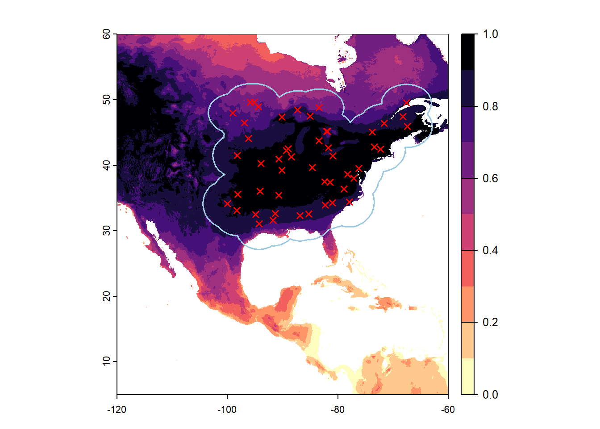
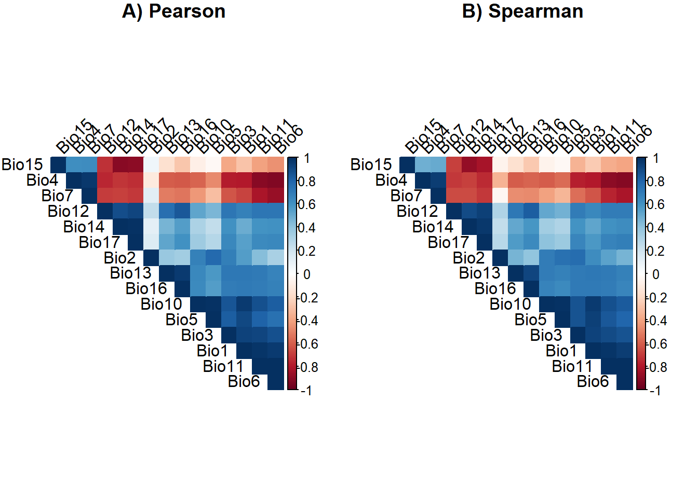
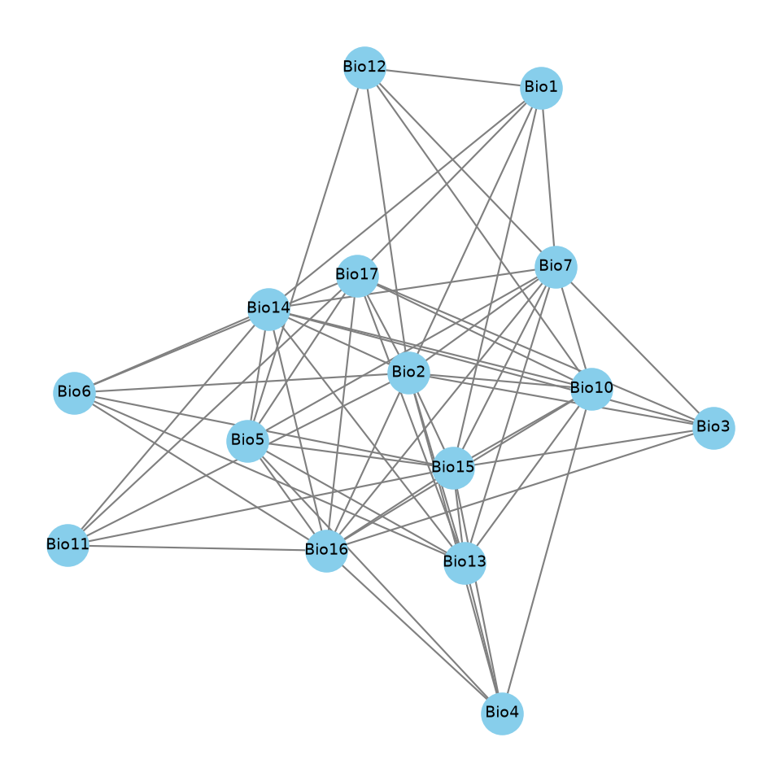
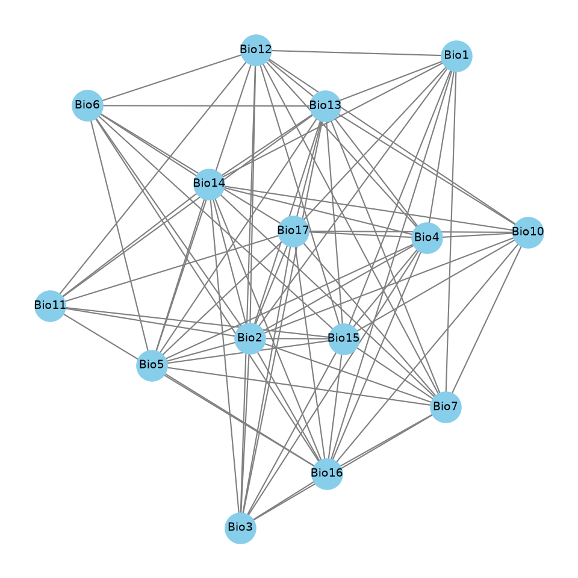
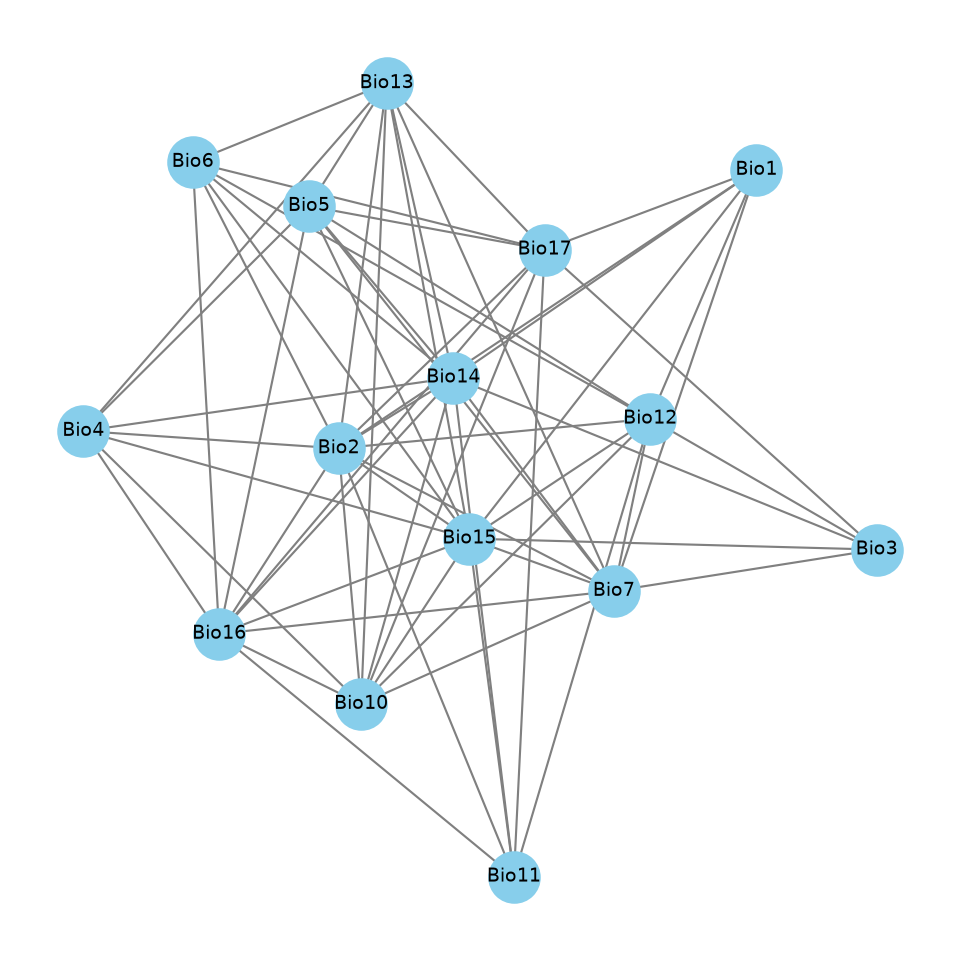
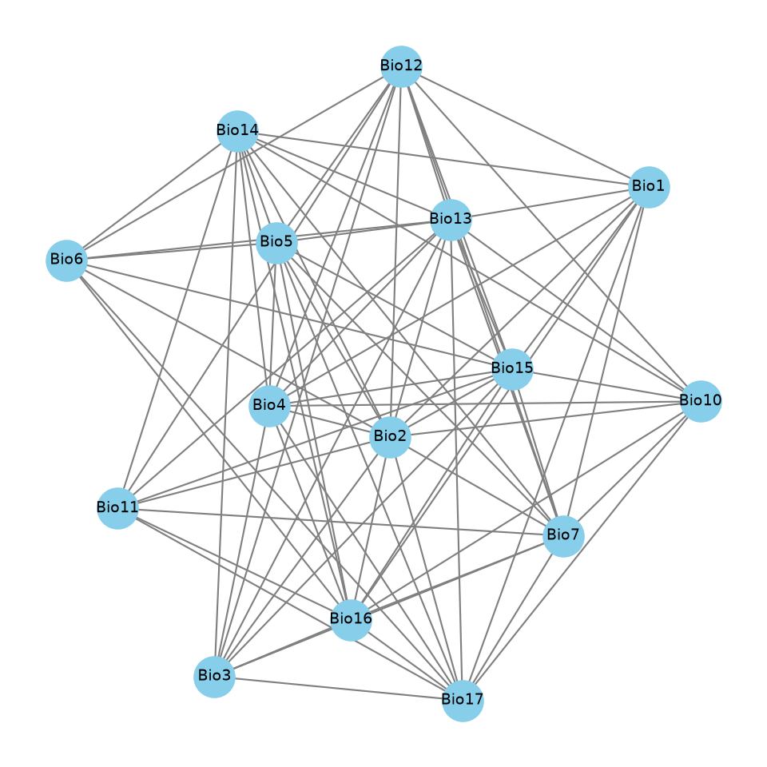

Variable selection
Patron-Rivero, C. & López-Reyes, K.
2026
Virtual species
Parametrization
library(virtualspecies)
vars <- sample(names(wc_crop), 3)
param_list <- lapply(vars, function(v) {
x <- values(wc_crop[[v]], na.rm = TRUE)
c(fun = "dnorm", mean = mean(x, na.rm = TRUE), sd = sd(x, na.rm = TRUE))
})
names(param_list) <- vars
my.parameters <- do.call(formatFunctions, param_list)
vars <- names(my.parameters)
w <- 2^(seq_along(vars) - 1)
w <- rev(w)
form_str <- paste(paste0(w, " * ", vars), collapse = " + ")
new.species <- generateSpFromFun(raster.stack = wc_crop[[vars]], parameters = my.parameters, formula = form_str, plot = FALSE)## [1] "4 * wc2.1_5m_bio_7 + 2 * wc2.1_5m_bio_11 + 1 * wc2.1_5m_bio_2"Occurrences & Visualization
library(geodata)
library(sf)
land <- geodata::world(path = "data/")
ext_na <- ext(-100, -60, 30, 50)
land_sub <- crop(land, ext_na)
land_sf <- st_as_sf(land_sub)
land_sf <- st_union(land_sf)
pts_sf <- st_sample(land_sf, size = 50, type = "random", exact = TRUE)
occ_land <- vect(pts_sf)
occ_m <- project(occ_land, "EPSG:3857")
buf_50km <- buffer(occ_m, width = 500000)
buf_50km <- project(buf_50km, "EPSG:4326")
buf_50km <- aggregate(buf_50km)
Extract data
library(terra)
library(stringr)
folder_path <- "D:/1_variable_selection/vars"
asc_files <- list.files(path = folder_path, pattern = "\\.asc$", full.names = TRUE)
vars_raster <- rast(asc_files)
occ <- read.csv("D:/1_variable_selection/occ.csv")
occ_extracted <- extract(vars_raster, occ[2:3])
occ <- data.frame(occ_extracted[, -1])
colnames(occ) <- str_extract(colnames(occ), "bio_\\d+") |> str_replace("bio_", "Bio")
knitr::kable(head(occ), format = "markdown", digits = 2)| Bio1 | Bio10 | Bio11 | Bio12 | Bio13 | Bio14 | Bio15 | Bio16 | Bio17 | Bio2 | Bio3 | Bio4 | Bio5 | Bio6 | Bio7 |
|---|---|---|---|---|---|---|---|---|---|---|---|---|---|---|
| 7.29 | 20.14 | -6.78 | 795 | 104 | 25 | 40.38 | 294 | 92 | 10.94 | 26.67 | 1085.77 | 27.52 | -13.51 | 41.03 |
| 11.55 | 22.34 | -0.03 | 1109 | 119 | 70 | 17.69 | 327 | 229 | 12.14 | 33.58 | 903.98 | 29.45 | -6.69 | 36.14 |
| 9.31 | 22.37 | -4.35 | 655 | 99 | 11 | 56.86 | 282 | 42 | 13.75 | 31.99 | 1080.80 | 30.44 | -12.54 | 42.97 |
| 14.32 | 24.07 | 4.28 | 1121 | 112 | 78 | 11.17 | 313 | 256 | 13.29 | 38.77 | 799.19 | 31.48 | -2.79 | 34.27 |
| 16.95 | 25.52 | 7.98 | 1374 | 200 | 68 | 34.43 | 508 | 237 | 12.22 | 39.67 | 710.55 | 31.81 | 1.01 | 30.80 |
| 8.27 | 19.98 | -4.07 | 956 | 96 | 58 | 14.60 | 266 | 187 | 9.19 | 25.70 | 982.81 | 26.67 | -9.08 | 35.74 |

Direct correlation sets
Scenario 1: Pearson - 0.7
## [1] "Bio1" "Bio12" "Bio2" "Bio7"Scenario 2: Pearson - 0.8
## [1] "Bio1" "Bio12" "Bio13" "Bio15" "Bio2" "Bio4"Scenario 3: Spearman - 0.7
## [1] "Bio1" "Bio12" "Bio15" "Bio2" "Bio7"Scenario 4: Spearman - 0.8
## [1] "Bio1" "Bio12" "Bio13" "Bio15" "Bio2" "Bio4"Scenario 5: VIF - 10
## 10 variables from the 15 input variables have collinearity problem:
##
## Bio6 Bio11 Bio1 Bio7 Bio5 Bio3 Bio17 Bio12 Bio13 Bio14
##
## After excluding the collinear variables, the linear correlation coefficients ranges between:
## min correlation ( Bio2 ~ Bio15 ): 0.06764604
## max correlation ( Bio2 ~ Bio10 ): 0.6796127
##
## ---------- VIFs of the remained variables --------
## Variables VIF
## 1 Bio10 4.756373
## 2 Bio15 2.064641
## 3 Bio16 1.979935
## 4 Bio2 2.572918
## 5 Bio4 4.224431Python implementations
Scenario 1: Graph Pearson - 0.7
import pandas as pd
import numpy as np
import networkx as nx
import matplotlib.pyplot as plt
file_path = r"D:\1_variable_selection/occ_vars.csv"
df = pd.read_csv(file_path)
corr_matrix = df.corr(method='pearson').abs()
threshold = 0.7
G = nx.Graph()
variables = corr_matrix.columns.tolist()
G.add_nodes_from(variables)
for i in range(len(variables)):
for j in range(i + 1, len(variables)):
var1 = variables[i]
var2 = variables[j]
if corr_matrix.loc[var1, var2] < threshold:
G.add_edge(var1, var2)
uncorrelated_groups = list(nx.find_cliques(G))
uncorrelated_groups.sort(key=len, reverse=True)
filtered_groups = [group for group in uncorrelated_groups if len(group) >= 3]
table_data = []
for i, group in enumerate(filtered_groups, 1):
sorted_group = sorted(group)
table_data.append({
"Set": f"Set {i}",
"Size": len(group),
"Variables": ", ".join(sorted_group)
})
table_df = pd.DataFrame(table_data)
print(table_df.to_string(index=False))## Set Size Variables
## Set 1 5 Bio10, Bio15, Bio16, Bio2, Bio4
## Set 2 5 Bio15, Bio16, Bio2, Bio3, Bio7
## Set 3 5 Bio10, Bio15, Bio16, Bio2, Bio7
## Set 4 5 Bio10, Bio13, Bio15, Bio2, Bio7
## Set 5 5 Bio10, Bio13, Bio15, Bio2, Bio4
## Set 6 5 Bio14, Bio16, Bio2, Bio3, Bio7
## Set 7 5 Bio10, Bio14, Bio16, Bio2, Bio7
## Set 8 5 Bio10, Bio13, Bio14, Bio2, Bio7
## Set 9 4 Bio15, Bio16, Bio5, Bio7
## Set 10 4 Bio15, Bio16, Bio4, Bio5
## Set 11 4 Bio14, Bio16, Bio5, Bio7
## Set 12 4 Bio13, Bio15, Bio5, Bio7
## Set 13 4 Bio13, Bio15, Bio4, Bio5
## Set 14 4 Bio13, Bio14, Bio5, Bio7
## Set 15 4 Bio11, Bio15, Bio16, Bio2
## Set 16 4 Bio15, Bio16, Bio2, Bio6
## Set 17 4 Bio13, Bio15, Bio2, Bio6
## Set 18 4 Bio1, Bio15, Bio2, Bio7
## Set 19 4 Bio16, Bio17, Bio2, Bio3
## Set 20 4 Bio11, Bio16, Bio17, Bio2
## Set 21 4 Bio16, Bio17, Bio2, Bio6
## Set 22 4 Bio10, Bio16, Bio17, Bio2
## Set 23 4 Bio13, Bio17, Bio2, Bio6
## Set 24 4 Bio10, Bio13, Bio17, Bio2
## Set 25 4 Bio1, Bio12, Bio2, Bio7
## Set 26 4 Bio10, Bio12, Bio2, Bio7
## Set 27 4 Bio11, Bio14, Bio16, Bio2
## Set 28 4 Bio14, Bio16, Bio2, Bio6
## Set 29 4 Bio13, Bio14, Bio2, Bio6
## Set 30 4 Bio1, Bio14, Bio2, Bio7
## Set 31 3 Bio16, Bio17, Bio5
## Set 32 3 Bio12, Bio5, Bio7
## Set 33 3 Bio13, Bio17, Bio5
## Set 34 3 Bio1, Bio17, Bio2plt.figure(figsize=(5, 5))
pos_general = nx.spring_layout(G, seed=42)
nx.draw(G, pos_general, with_labels=True, node_color='skyblue', node_size=350, font_size=7, edge_color='gray', width=0.8)
plt.title(f"Scenario1: Spearman (|r| < {threshold})", fontsize=10, fontweight='bold')
plt.tight_layout()## <string>:1: UserWarning: This figure includes Axes that are not compatible with tight_layout, so results might be incorrect.

Scenario 2: Graph Pearson - 0.8
import pandas as pd
import numpy as np
import networkx as nx
import matplotlib.pyplot as plt
file_path = r"D:\1_variable_selection/occ_vars.csv"
df = pd.read_csv(file_path)
corr_matrix = df.corr(method='pearson').abs()
threshold = 0.8
G = nx.Graph()
variables = corr_matrix.columns.tolist()
G.add_nodes_from(variables)
for i in range(len(variables)):
for j in range(i + 1, len(variables)):
var1 = variables[i]
var2 = variables[j]
if corr_matrix.loc[var1, var2] < threshold:
G.add_edge(var1, var2)
uncorrelated_groups = list(nx.find_cliques(G))
uncorrelated_groups.sort(key=len, reverse=True)
filtered_groups = [group for group in uncorrelated_groups if len(group) >= 3]
table_data = []
for i, group in enumerate(filtered_groups, 1):
sorted_group = sorted(group)
table_data.append({
"Set": f"Set {i}",
"Size": len(group),
"Variables": ", ".join(sorted_group)
})
table_df = pd.DataFrame(table_data)
print(table_df.to_string(index=False))## Set Size Variables
## Set 1 6 Bio12, Bio13, Bio15, Bio2, Bio4, Bio5
## Set 2 6 Bio12, Bio13, Bio15, Bio2, Bio3, Bio4
## Set 3 6 Bio1, Bio12, Bio13, Bio15, Bio2, Bio4
## Set 4 6 Bio10, Bio12, Bio13, Bio15, Bio2, Bio4
## Set 5 6 Bio12, Bio13, Bio15, Bio2, Bio5, Bio6
## Set 6 6 Bio12, Bio13, Bio15, Bio2, Bio5, Bio7
## Set 7 6 Bio12, Bio13, Bio15, Bio2, Bio3, Bio7
## Set 8 6 Bio1, Bio12, Bio13, Bio15, Bio2, Bio7
## Set 9 6 Bio10, Bio12, Bio13, Bio15, Bio2, Bio7
## Set 10 5 Bio15, Bio16, Bio2, Bio4, Bio5
## Set 11 5 Bio15, Bio16, Bio2, Bio3, Bio4
## Set 12 5 Bio1, Bio15, Bio16, Bio2, Bio4
## Set 13 5 Bio10, Bio15, Bio16, Bio2, Bio4
## Set 14 5 Bio15, Bio16, Bio2, Bio5, Bio6
## Set 15 5 Bio15, Bio16, Bio2, Bio5, Bio7
## Set 16 5 Bio15, Bio16, Bio2, Bio3, Bio7
## Set 17 5 Bio1, Bio15, Bio16, Bio2, Bio7
## Set 18 5 Bio10, Bio15, Bio16, Bio2, Bio7
## Set 19 5 Bio16, Bio17, Bio2, Bio4, Bio5
## Set 20 5 Bio16, Bio17, Bio2, Bio3, Bio4
## Set 21 5 Bio1, Bio16, Bio17, Bio2, Bio4
## Set 22 5 Bio10, Bio16, Bio17, Bio2, Bio4
## Set 23 5 Bio16, Bio17, Bio2, Bio5, Bio6
## Set 24 5 Bio16, Bio17, Bio2, Bio5, Bio7
## Set 25 5 Bio16, Bio17, Bio2, Bio3, Bio7
## Set 26 5 Bio1, Bio16, Bio17, Bio2, Bio7
## Set 27 5 Bio10, Bio16, Bio17, Bio2, Bio7
## Set 28 5 Bio14, Bio16, Bio2, Bio4, Bio5
## Set 29 5 Bio14, Bio16, Bio2, Bio3, Bio4
## Set 30 5 Bio1, Bio14, Bio16, Bio2, Bio4
## Set 31 5 Bio10, Bio14, Bio16, Bio2, Bio4
## Set 32 5 Bio14, Bio16, Bio2, Bio5, Bio6
## Set 33 5 Bio14, Bio16, Bio2, Bio5, Bio7
## Set 34 5 Bio14, Bio16, Bio2, Bio3, Bio7
## Set 35 5 Bio1, Bio14, Bio16, Bio2, Bio7
## Set 36 5 Bio10, Bio14, Bio16, Bio2, Bio7
## Set 37 5 Bio11, Bio12, Bio13, Bio15, Bio2
## Set 38 5 Bio13, Bio17, Bio2, Bio3, Bio4
## Set 39 5 Bio13, Bio17, Bio2, Bio4, Bio5
## Set 40 5 Bio1, Bio13, Bio17, Bio2, Bio4
## Set 41 5 Bio10, Bio13, Bio17, Bio2, Bio4
## Set 42 5 Bio13, Bio17, Bio2, Bio5, Bio6
## Set 43 5 Bio13, Bio17, Bio2, Bio3, Bio7
## Set 44 5 Bio13, Bio17, Bio2, Bio5, Bio7
## Set 45 5 Bio1, Bio13, Bio17, Bio2, Bio7
## Set 46 5 Bio10, Bio13, Bio17, Bio2, Bio7
## Set 47 5 Bio13, Bio14, Bio2, Bio3, Bio4
## Set 48 5 Bio13, Bio14, Bio2, Bio4, Bio5
## Set 49 5 Bio1, Bio13, Bio14, Bio2, Bio4
## Set 50 5 Bio10, Bio13, Bio14, Bio2, Bio4
## Set 51 5 Bio13, Bio14, Bio2, Bio5, Bio6
## Set 52 5 Bio13, Bio14, Bio2, Bio3, Bio7
## Set 53 5 Bio13, Bio14, Bio2, Bio5, Bio7
## Set 54 5 Bio1, Bio13, Bio14, Bio2, Bio7
## Set 55 5 Bio10, Bio13, Bio14, Bio2, Bio7
## Set 56 4 Bio11, Bio15, Bio16, Bio2
## Set 57 4 Bio11, Bio16, Bio17, Bio2
## Set 58 4 Bio11, Bio14, Bio16, Bio2
## Set 59 4 Bio11, Bio13, Bio17, Bio2
## Set 60 4 Bio11, Bio13, Bio14, Bio2plt.figure(figsize=(5, 5))
pos_general = nx.spring_layout(G, seed=42)
nx.draw(G, pos_general, with_labels=True, node_color='skyblue', node_size=350, font_size=7, edge_color='gray', width=0.8)
plt.title(f"Scenario1: Spearman (|r| < {threshold})", fontsize=10, fontweight='bold')
plt.tight_layout()## <string>:1: UserWarning: This figure includes Axes that are not compatible with tight_layout, so results might be incorrect.

Scenario 3: Graph Spearman - 0.7
import pandas as pd
import numpy as np
import networkx as nx
import matplotlib.pyplot as plt
file_path = r"D:\1_variable_selection/occ_vars.csv"
df = pd.read_csv(file_path)
corr_matrix = df.corr(method='spearman').abs()
threshold = 0.7
G = nx.Graph()
variables = corr_matrix.columns.tolist()
G.add_nodes_from(variables)
for i in range(len(variables)):
for j in range(i + 1, len(variables)):
var1 = variables[i]
var2 = variables[j]
if corr_matrix.loc[var1, var2] < threshold:
G.add_edge(var1, var2)
uncorrelated_groups = list(nx.find_cliques(G))
uncorrelated_groups.sort(key=len, reverse=True)
filtered_groups = [group for group in uncorrelated_groups if len(group) >= 3]
table_data = []
for i, group in enumerate(filtered_groups, 1):
sorted_group = sorted(group)
table_data.append({
"Set": f"Set {i}",
"Size": len(group),
"Variables": ", ".join(sorted_group)
})
table_df = pd.DataFrame(table_data)
print(table_df.to_string(index=False))## Set Size Variables
## Set 1 5 Bio10, Bio15, Bio16, Bio2, Bio7
## Set 2 5 Bio10, Bio15, Bio16, Bio2, Bio4
## Set 3 5 Bio1, Bio12, Bio15, Bio2, Bio7
## Set 4 5 Bio10, Bio12, Bio15, Bio2, Bio7
## Set 5 5 Bio10, Bio13, Bio15, Bio2, Bio7
## Set 6 5 Bio10, Bio13, Bio15, Bio2, Bio4
## Set 7 5 Bio10, Bio14, Bio16, Bio2, Bio7
## Set 8 5 Bio10, Bio14, Bio16, Bio2, Bio4
## Set 9 5 Bio10, Bio13, Bio14, Bio2, Bio7
## Set 10 5 Bio10, Bio13, Bio14, Bio2, Bio4
## Set 11 4 Bio12, Bio15, Bio3, Bio7
## Set 12 4 Bio15, Bio16, Bio5, Bio7
## Set 13 4 Bio12, Bio15, Bio5, Bio7
## Set 14 4 Bio13, Bio15, Bio5, Bio7
## Set 15 4 Bio15, Bio16, Bio4, Bio5
## Set 16 4 Bio13, Bio15, Bio4, Bio5
## Set 17 4 Bio11, Bio15, Bio16, Bio2
## Set 18 4 Bio15, Bio16, Bio2, Bio6
## Set 19 4 Bio11, Bio12, Bio15, Bio2
## Set 20 4 Bio12, Bio15, Bio2, Bio6
## Set 21 4 Bio13, Bio15, Bio2, Bio6
## Set 22 4 Bio11, Bio16, Bio17, Bio2
## Set 23 4 Bio16, Bio17, Bio2, Bio6
## Set 24 4 Bio10, Bio16, Bio17, Bio2
## Set 25 4 Bio13, Bio17, Bio2, Bio6
## Set 26 4 Bio10, Bio13, Bio17, Bio2
## Set 27 4 Bio14, Bio16, Bio5, Bio7
## Set 28 4 Bio14, Bio16, Bio4, Bio5
## Set 29 4 Bio13, Bio14, Bio5, Bio7
## Set 30 4 Bio13, Bio14, Bio4, Bio5
## Set 31 4 Bio11, Bio14, Bio16, Bio2
## Set 32 4 Bio14, Bio16, Bio2, Bio6
## Set 33 4 Bio13, Bio14, Bio2, Bio6
## Set 34 4 Bio1, Bio14, Bio2, Bio7
## Set 35 3 Bio16, Bio17, Bio5
## Set 36 3 Bio13, Bio17, Bio5
## Set 37 3 Bio1, Bio17, Bio2
## Set 38 3 Bio14, Bio3, Bio7plt.figure(figsize=(5, 5))
pos_general = nx.spring_layout(G, seed=42)
nx.draw(G, pos_general, with_labels=True, node_color='skyblue', node_size=350, font_size=7, edge_color='gray', width=0.8)
plt.title(f"Scenario1: Spearman (|r| < {threshold})", fontsize=10, fontweight='bold')
plt.tight_layout()## <string>:1: UserWarning: This figure includes Axes that are not compatible with tight_layout, so results might be incorrect.

Scenario 4: Graph Spearman - 0.8
import pandas as pd
import numpy as np
import networkx as nx
import matplotlib.pyplot as plt
file_path = r"D:\1_variable_selection/occ_vars.csv"
df = pd.read_csv(file_path)
corr_matrix = df.corr(method='spearman').abs()
threshold = 0.8
G = nx.Graph()
variables = corr_matrix.columns.tolist()
G.add_nodes_from(variables)
for i in range(len(variables)):
for j in range(i + 1, len(variables)):
var1 = variables[i]
var2 = variables[j]
if corr_matrix.loc[var1, var2] < threshold:
G.add_edge(var1, var2)
uncorrelated_groups = list(nx.find_cliques(G))
uncorrelated_groups.sort(key=len, reverse=True)
filtered_groups = [group for group in uncorrelated_groups if len(group) >= 3]
table_data = []
for i, group in enumerate(filtered_groups, 1):
sorted_group = sorted(group)
table_data.append({
"Set": f"Set {i}",
"Size": len(group),
"Variables": ", ".join(sorted_group)
})
table_df = pd.DataFrame(table_data)
print(table_df.to_string(index=False))## Set Size Variables
## Set 1 6 Bio12, Bio13, Bio15, Bio2, Bio4, Bio5
## Set 2 6 Bio12, Bio13, Bio15, Bio2, Bio3, Bio4
## Set 3 6 Bio1, Bio12, Bio13, Bio15, Bio2, Bio4
## Set 4 6 Bio10, Bio12, Bio13, Bio15, Bio2, Bio4
## Set 5 6 Bio11, Bio12, Bio13, Bio15, Bio2, Bio7
## Set 6 6 Bio12, Bio13, Bio15, Bio2, Bio5, Bio7
## Set 7 6 Bio1, Bio12, Bio13, Bio15, Bio2, Bio7
## Set 8 6 Bio10, Bio12, Bio13, Bio15, Bio2, Bio7
## Set 9 6 Bio12, Bio13, Bio15, Bio2, Bio3, Bio7
## Set 10 6 Bio12, Bio13, Bio15, Bio2, Bio5, Bio6
## Set 11 5 Bio15, Bio16, Bio2, Bio4, Bio5
## Set 12 5 Bio15, Bio16, Bio2, Bio3, Bio4
## Set 13 5 Bio1, Bio15, Bio16, Bio2, Bio4
## Set 14 5 Bio10, Bio15, Bio16, Bio2, Bio4
## Set 15 5 Bio11, Bio15, Bio16, Bio2, Bio7
## Set 16 5 Bio15, Bio16, Bio2, Bio5, Bio7
## Set 17 5 Bio1, Bio15, Bio16, Bio2, Bio7
## Set 18 5 Bio10, Bio15, Bio16, Bio2, Bio7
## Set 19 5 Bio15, Bio16, Bio2, Bio3, Bio7
## Set 20 5 Bio15, Bio16, Bio2, Bio5, Bio6
## Set 21 5 Bio16, Bio17, Bio2, Bio4, Bio5
## Set 22 5 Bio16, Bio17, Bio2, Bio3, Bio4
## Set 23 5 Bio1, Bio16, Bio17, Bio2, Bio4
## Set 24 5 Bio10, Bio16, Bio17, Bio2, Bio4
## Set 25 5 Bio11, Bio16, Bio17, Bio2, Bio7
## Set 26 5 Bio16, Bio17, Bio2, Bio5, Bio7
## Set 27 5 Bio1, Bio16, Bio17, Bio2, Bio7
## Set 28 5 Bio10, Bio16, Bio17, Bio2, Bio7
## Set 29 5 Bio16, Bio17, Bio2, Bio3, Bio7
## Set 30 5 Bio16, Bio17, Bio2, Bio5, Bio6
## Set 31 5 Bio14, Bio16, Bio2, Bio4, Bio5
## Set 32 5 Bio14, Bio16, Bio2, Bio3, Bio4
## Set 33 5 Bio1, Bio14, Bio16, Bio2, Bio4
## Set 34 5 Bio10, Bio14, Bio16, Bio2, Bio4
## Set 35 5 Bio11, Bio14, Bio16, Bio2, Bio7
## Set 36 5 Bio14, Bio16, Bio2, Bio5, Bio7
## Set 37 5 Bio1, Bio14, Bio16, Bio2, Bio7
## Set 38 5 Bio10, Bio14, Bio16, Bio2, Bio7
## Set 39 5 Bio14, Bio16, Bio2, Bio3, Bio7
## Set 40 5 Bio14, Bio16, Bio2, Bio5, Bio6
## Set 41 5 Bio13, Bio17, Bio2, Bio3, Bio4
## Set 42 5 Bio13, Bio17, Bio2, Bio4, Bio5
## Set 43 5 Bio1, Bio13, Bio17, Bio2, Bio4
## Set 44 5 Bio10, Bio13, Bio17, Bio2, Bio4
## Set 45 5 Bio11, Bio13, Bio17, Bio2, Bio7
## Set 46 5 Bio1, Bio13, Bio17, Bio2, Bio7
## Set 47 5 Bio13, Bio17, Bio2, Bio3, Bio7
## Set 48 5 Bio10, Bio13, Bio17, Bio2, Bio7
## Set 49 5 Bio13, Bio17, Bio2, Bio5, Bio7
## Set 50 5 Bio13, Bio17, Bio2, Bio5, Bio6
## Set 51 5 Bio13, Bio14, Bio2, Bio3, Bio4
## Set 52 5 Bio13, Bio14, Bio2, Bio4, Bio5
## Set 53 5 Bio1, Bio13, Bio14, Bio2, Bio4
## Set 54 5 Bio10, Bio13, Bio14, Bio2, Bio4
## Set 55 5 Bio11, Bio13, Bio14, Bio2, Bio7
## Set 56 5 Bio1, Bio13, Bio14, Bio2, Bio7
## Set 57 5 Bio13, Bio14, Bio2, Bio3, Bio7
## Set 58 5 Bio10, Bio13, Bio14, Bio2, Bio7
## Set 59 5 Bio13, Bio14, Bio2, Bio5, Bio7
## Set 60 5 Bio13, Bio14, Bio2, Bio5, Bio6plt.figure(figsize=(5, 5))
pos_general = nx.spring_layout(G, seed=42)
nx.draw(G, pos_general, with_labels=True, node_color='skyblue', node_size=350, font_size=7, edge_color='gray', width=0.8)
plt.title(f"Scenario1: Spearman (|r| < {threshold})", fontsize=10, fontweight='bold')
plt.tight_layout()## <string>:1: UserWarning: This figure includes Axes that are not compatible with tight_layout, so results might be incorrect.

Scenario 5: VIF - 10
import numpy as np
import pandas as pd
ruta_csv = r"D:\1_variable_selection\occ_vars.csv"
df = pd.read_csv(ruta_csv)
def fast_vif(df_subset):
corr_matrix = df_subset.corr().values
try:
inv_corr = np.linalg.inv(corr_matrix)
return np.diag(inv_corr)
except np.linalg.LinAlgError:
return np.full(corr_matrix.shape[0], np.inf)
def busqueda_recursiva_vif(datos, variables_actuales, umbral_vif, sets_aprobados, visitados):
tupla_vars = tuple(sorted(variables_actuales))
if tupla_vars in visitados:
return
visitados.add(tupla_vars)
if len(variables_actuales) < 3:
return
cols = list(variables_actuales)
vifs = fast_vif(datos[cols])
max_vif = np.max(vifs)
if max_vif < umbral_vif:
sets_aprobados.add((tupla_vars, max_vif))
return
for i, variable in enumerate(cols):
if vifs[i] > (umbral_vif * 0.5):
nuevo_set = variables_actuales - {variable}
busqueda_recursiva_vif(datos, nuevo_set, umbral_vif, sets_aprobados, visitados)
umbral_estricto_vif = 10.0
sets_crudos_aprobados = set()
memoria_visitados = set()
todas_las_variables = set(df.columns)
busqueda_recursiva_vif(df, todas_las_variables, umbral_estricto_vif, sets_crudos_aprobados, memoria_visitados)
sets_ordenados_por_tamaño = sorted([s[0] for s in sets_crudos_aprobados], key=len, reverse=True)
sets_finales_maximos = []
for s in sets_ordenados_por_tamaño:
set_actual = set(s)
es_subconjunto = any(set_actual.issubset(set(set_max)) for set_max in sets_finales_maximos)
if not es_subconjunto:
sets_finales_maximos.append(s)
resultados_con_vif = []
for s in sets_finales_maximos:
vif_max = np.max(fast_vif(df[list(s)]))
resultados_con_vif.append((s, vif_max))
resultados_con_vif = sorted(resultados_con_vif, key=lambda x: len(x[0]), reverse=True)
table_data = []
for i, (set_vars, max_v) in enumerate(resultados_con_vif, 1):
table_data.append({
"Set": f"Set {i}",
"Size": len(set_vars),
"Max VIF": round(max_v, 2),
"Variables": ", ".join(sorted(set_vars))
})
table_df = pd.DataFrame(table_data)
print(table_df.to_string(index=False))## Set Size Max VIF Variables
## Set 1 5 9.09 Bio10, Bio15, Bio17, Bio2, Bio4
## Set 2 5 9.13 Bio10, Bio15, Bio17, Bio2, Bio7
## Set 3 5 7.88 Bio1, Bio13, Bio17, Bio2, Bio4
## Set 4 5 4.44 Bio10, Bio13, Bio14, Bio2, Bio4
## Set 5 5 8.18 Bio10, Bio14, Bio15, Bio2, Bio4
## Set 6 5 8.35 Bio12, Bio14, Bio3, Bio5, Bio6
## Set 7 5 9.49 Bio10, Bio11, Bio14, Bio16, Bio3
## Set 8 5 9.75 Bio1, Bio12, Bio14, Bio3, Bio4
## Set 9 5 4.96 Bio10, Bio13, Bio17, Bio2, Bio7
## Set 10 5 9.51 Bio1, Bio14, Bio15, Bio3, Bio7
## Set 11 5 7.58 Bio10, Bio13, Bio17, Bio3, Bio6
## Set 12 5 9.48 Bio10, Bio12, Bio17, Bio3, Bio6
## Set 13 5 5.48 Bio13, Bio14, Bio2, Bio5, Bio7
## Set 14 5 7.75 Bio15, Bio16, Bio3, Bio5, Bio6
## Set 15 5 9.01 Bio1, Bio13, Bio15, Bio3, Bio4
## Set 16 5 7.39 Bio10, Bio16, Bio17, Bio3, Bio6
## Set 17 5 4.60 Bio10, Bio14, Bio16, Bio2, Bio4
## Set 18 5 9.10 Bio13, Bio15, Bio2, Bio3, Bio5
## Set 19 5 6.97 Bio10, Bio12, Bio14, Bio2, Bio7
## Set 20 5 9.22 Bio1, Bio15, Bio17, Bio2, Bio4
## Set 21 5 8.97 Bio1, Bio13, Bio17, Bio3, Bio4
## Set 22 5 8.61 Bio11, Bio12, Bio16, Bio3, Bio5
## Set 23 5 9.62 Bio10, Bio11, Bio16, Bio17, Bio3
## Set 24 5 8.80 Bio12, Bio17, Bio3, Bio5, Bio6
## Set 25 5 9.64 Bio10, Bio11, Bio12, Bio17, Bio3
## Set 26 5 5.24 Bio12, Bio15, Bio2, Bio4, Bio5
## Set 27 5 6.24 Bio10, Bio12, Bio13, Bio3, Bio7
## Set 28 5 7.79 Bio10, Bio13, Bio15, Bio3, Bio4
## Set 29 5 6.42 Bio10, Bio12, Bio15, Bio3, Bio7
## Set 30 5 7.20 Bio10, Bio12, Bio15, Bio3, Bio6
## Set 31 5 5.59 Bio10, Bio12, Bio15, Bio2, Bio7
## Set 32 5 9.56 Bio12, Bio15, Bio3, Bio4, Bio5
## Set 33 5 8.35 Bio12, Bio14, Bio3, Bio5, Bio7
## Set 34 5 7.34 Bio1, Bio12, Bio13, Bio2, Bio4
## Set 35 5 9.81 Bio1, Bio14, Bio15, Bio2, Bio7
## Set 36 5 9.22 Bio11, Bio13, Bio15, Bio3, Bio5
## Set 37 5 4.90 Bio13, Bio17, Bio2, Bio4, Bio5
## Set 38 5 5.79 Bio10, Bio12, Bio16, Bio2, Bio7
## Set 39 5 9.50 Bio11, Bio12, Bio14, Bio3, Bio5
## Set 40 5 9.50 Bio10, Bio14, Bio15, Bio2, Bio3
## Set 41 5 9.74 Bio11, Bio16, Bio17, Bio3, Bio5
## Set 42 5 9.50 Bio1, Bio13, Bio17, Bio3, Bio7
## Set 43 5 9.61 Bio10, Bio11, Bio12, Bio16, Bio3
## Set 44 5 8.56 Bio14, Bio16, Bio3, Bio5, Bio6
## Set 45 5 9.93 Bio11, Bio13, Bio14, Bio3, Bio5
## Set 46 5 5.34 Bio10, Bio15, Bio16, Bio2, Bio7
## Set 47 5 7.09 Bio10, Bio15, Bio16, Bio3, Bio6
## Set 48 5 8.05 Bio14, Bio15, Bio2, Bio4, Bio5
## Set 49 5 7.63 Bio12, Bio15, Bio3, Bio5, Bio6
## Set 50 5 9.56 Bio10, Bio11, Bio13, Bio14, Bio3
## Set 51 5 9.18 Bio1, Bio14, Bio15, Bio3, Bio4
## Set 52 5 9.05 Bio10, Bio12, Bio17, Bio2, Bio4
## Set 53 5 9.16 Bio1, Bio15, Bio16, Bio3, Bio4
## Set 54 5 9.23 Bio10, Bio12, Bio17, Bio3, Bio4
## Set 55 5 8.71 Bio1, Bio12, Bio13, Bio2, Bio7
## Set 56 5 9.57 Bio10, Bio11, Bio12, Bio14, Bio3
## Set 57 5 8.26 Bio1, Bio13, Bio15, Bio2, Bio4
## Set 58 5 9.66 Bio14, Bio15, Bio2, Bio3, Bio5
## Set 59 5 9.37 Bio10, Bio12, Bio17, Bio3, Bio7
## Set 60 5 7.27 Bio10, Bio14, Bio16, Bio3, Bio6
## Set 61 5 8.48 Bio14, Bio16, Bio2, Bio3, Bio5
## Set 62 5 7.52 Bio10, Bio15, Bio16, Bio3, Bio4
## Set 63 5 5.55 Bio13, Bio15, Bio2, Bio5, Bio7
## Set 64 5 7.37 Bio10, Bio13, Bio17, Bio3, Bio7
## Set 65 5 5.61 Bio14, Bio16, Bio2, Bio5, Bio7
## Set 66 5 9.65 Bio10, Bio14, Bio16, Bio2, Bio3
## Set 67 5 8.16 Bio1, Bio16, Bio17, Bio2, Bio4
## Set 68 5 9.10 Bio1, Bio12, Bio16, Bio2, Bio7
## Set 69 5 9.57 Bio13, Bio17, Bio2, Bio3, Bio5
## Set 70 5 7.63 Bio12, Bio15, Bio3, Bio5, Bio7
## Set 71 5 8.71 Bio16, Bio17, Bio3, Bio5, Bio7
## Set 72 5 9.13 Bio10, Bio15, Bio16, Bio2, Bio3
## Set 73 5 9.01 Bio1, Bio13, Bio14, Bio3, Bio4
## Set 74 5 9.51 Bio14, Bio15, Bio3, Bio5, Bio7
## Set 75 5 6.92 Bio10, Bio13, Bio15, Bio3, Bio7
## Set 76 5 6.31 Bio10, Bio12, Bio16, Bio3, Bio7
## Set 77 5 9.74 Bio1, Bio13, Bio14, Bio2, Bio7
## Set 78 5 8.19 Bio10, Bio16, Bio17, Bio3, Bio4
## Set 79 5 9.54 Bio1, Bio13, Bio14, Bio3, Bio7
## Set 80 5 7.48 Bio10, Bio12, Bio16, Bio3, Bio4
## Set 81 5 5.41 Bio13, Bio17, Bio2, Bio5, Bio7
## Set 82 5 8.71 Bio16, Bio17, Bio3, Bio5, Bio6
## Set 83 5 9.43 Bio1, Bio12, Bio15, Bio3, Bio4
## Set 84 5 5.55 Bio16, Bio17, Bio2, Bio5, Bio7
## Set 85 5 8.99 Bio1, Bio12, Bio15, Bio2, Bio4
## Set 86 5 8.32 Bio10, Bio13, Bio17, Bio3, Bio4
## Set 87 5 7.51 Bio10, Bio12, Bio15, Bio3, Bio4
## Set 88 5 8.63 Bio12, Bio17, Bio2, Bio4, Bio5
## Set 89 5 9.92 Bio11, Bio14, Bio15, Bio3, Bio5
## Set 90 5 7.20 Bio10, Bio16, Bio17, Bio3, Bio7
## Set 91 5 7.69 Bio1, Bio12, Bio16, Bio2, Bio4
## Set 92 5 8.77 Bio11, Bio15, Bio16, Bio3, Bio5
## Set 93 5 8.06 Bio10, Bio12, Bio14, Bio3, Bio4
## Set 94 5 4.99 Bio10, Bio12, Bio15, Bio2, Bio4
## Set 95 5 9.63 Bio12, Bio13, Bio3, Bio4, Bio5
## Set 96 5 5.23 Bio10, Bio13, Bio15, Bio2, Bio7
## Set 97 5 9.27 Bio10, Bio12, Bio17, Bio2, Bio7
## Set 98 5 7.95 Bio1, Bio12, Bio13, Bio3, Bio4
## Set 99 5 6.55 Bio10, Bio12, Bio13, Bio3, Bio6
## Set 100 5 5.08 Bio14, Bio16, Bio2, Bio4, Bio5
## Set 101 5 8.34 Bio1, Bio12, Bio16, Bio3, Bio4
## Set 102 5 7.60 Bio12, Bio13, Bio3, Bio5, Bio7
## Set 103 5 4.49 Bio12, Bio13, Bio2, Bio4, Bio5
## Set 104 5 9.91 Bio1, Bio16, Bio17, Bio2, Bio7
## Set 105 5 7.19 Bio10, Bio12, Bio14, Bio3, Bio6
## Set 106 5 8.52 Bio1, Bio15, Bio16, Bio2, Bio4
## Set 107 5 9.99 Bio10, Bio12, Bio17, Bio2, Bio3
## Set 108 5 9.62 Bio11, Bio14, Bio16, Bio3, Bio5
## Set 109 5 8.80 Bio15, Bio17, Bio2, Bio4, Bio5
## Set 110 5 8.93 Bio15, Bio17, Bio2, Bio5, Bio7
## Set 111 5 9.59 Bio1, Bio15, Bio16, Bio3, Bio7
## Set 112 5 9.37 Bio10, Bio11, Bio12, Bio13, Bio3
## Set 113 5 5.10 Bio15, Bio16, Bio2, Bio4, Bio5
## Set 114 5 8.34 Bio13, Bio15, Bio3, Bio5, Bio7
## Set 115 5 8.85 Bio12, Bio17, Bio2, Bio5, Bio7
## Set 116 5 5.13 Bio10, Bio16, Bio17, Bio2, Bio7
## Set 117 5 7.15 Bio12, Bio13, Bio2, Bio3, Bio5
## Set 118 5 4.47 Bio10, Bio12, Bio13, Bio2, Bio7
## Set 119 5 8.25 Bio1, Bio12, Bio13, Bio3, Bio7
## Set 120 5 5.03 Bio16, Bio17, Bio2, Bio4, Bio5
## Set 121 5 6.99 Bio10, Bio12, Bio14, Bio3, Bio7
## Set 122 5 9.06 Bio13, Bio17, Bio3, Bio5, Bio7
## Set 123 5 9.06 Bio13, Bio17, Bio3, Bio5, Bio6
## Set 124 5 8.56 Bio14, Bio16, Bio3, Bio5, Bio7
## Set 125 5 7.91 Bio10, Bio12, Bio13, Bio2, Bio3
## Set 126 5 7.50 Bio10, Bio13, Bio14, Bio3, Bio6
## Set 127 5 9.67 Bio10, Bio11, Bio13, Bio17, Bio3
## Set 128 5 9.76 Bio11, Bio12, Bio17, Bio3, Bio5
## Set 129 5 7.06 Bio10, Bio14, Bio16, Bio3, Bio7
## Set 130 5 6.66 Bio12, Bio14, Bio2, Bio5, Bio7
## Set 131 5 6.51 Bio10, Bio15, Bio16, Bio3, Bio7
## Set 132 5 8.70 Bio10, Bio12, Bio15, Bio2, Bio3
## Set 133 5 8.09 Bio12, Bio14, Bio2, Bio3, Bio5
## Set 134 5 8.10 Bio10, Bio14, Bio16, Bio3, Bio4
## Set 135 5 8.25 Bio1, Bio14, Bio16, Bio2, Bio4
## Set 136 5 7.84 Bio15, Bio16, Bio2, Bio3, Bio5
## Set 137 5 4.63 Bio10, Bio13, Bio15, Bio2, Bio4
## Set 138 5 5.64 Bio10, Bio12, Bio16, Bio2, Bio4
## Set 139 5 9.85 Bio1, Bio12, Bio15, Bio3, Bio7
## Set 140 5 8.98 Bio13, Bio14, Bio3, Bio5, Bio7
## Set 141 5 5.04 Bio13, Bio15, Bio2, Bio4, Bio5
## Set 142 5 5.66 Bio12, Bio16, Bio2, Bio5, Bio7
## Set 143 5 9.19 Bio10, Bio14, Bio15, Bio3, Bio4
## Set 144 5 9.43 Bio10, Bio12, Bio14, Bio2, Bio3
## Set 145 5 9.48 Bio1, Bio13, Bio15, Bio3, Bio7
## Set 146 5 6.56 Bio10, Bio12, Bio16, Bio3, Bio6
## Set 147 5 7.28 Bio10, Bio13, Bio14, Bio3, Bio7
## Set 148 5 7.95 Bio1, Bio13, Bio14, Bio2, Bio4
## Set 149 5 9.20 Bio10, Bio14, Bio15, Bio3, Bio6
## Set 150 5 7.47 Bio10, Bio12, Bio13, Bio3, Bio4
## Set 151 5 5.17 Bio10, Bio14, Bio16, Bio2, Bio7
## Set 152 5 7.17 Bio12, Bio16, Bio2, Bio3, Bio5
## Set 153 5 7.60 Bio12, Bio13, Bio3, Bio5, Bio6
## Set 154 5 7.56 Bio12, Bio16, Bio3, Bio5, Bio7
## Set 155 5 8.27 Bio10, Bio13, Bio14, Bio3, Bio4
## Set 156 5 8.37 Bio1, Bio12, Bio14, Bio2, Bio4
## Set 157 5 8.80 Bio12, Bio17, Bio3, Bio5, Bio7
## Set 158 5 4.76 Bio10, Bio15, Bio16, Bio2, Bio4
## Set 159 5 5.01 Bio10, Bio13, Bio14, Bio2, Bio7
## Set 160 5 9.32 Bio1, Bio14, Bio16, Bio3, Bio4
## Set 161 5 9.18 Bio1, Bio12, Bio17, Bio2, Bio4
## Set 162 5 9.30 Bio1, Bio16, Bio17, Bio3, Bio4
## Set 163 5 9.21 Bio10, Bio14, Bio15, Bio3, Bio7
## Set 164 5 6.70 Bio12, Bio14, Bio2, Bio4, Bio5
## Set 165 5 8.14 Bio10, Bio12, Bio16, Bio2, Bio3
## Set 166 5 10.00 Bio11, Bio13, Bio17, Bio3, Bio5
## Set 167 5 4.56 Bio10, Bio16, Bio17, Bio2, Bio4
## Set 168 5 4.41 Bio10, Bio13, Bio17, Bio2, Bio4
## Set 169 5 8.61 Bio11, Bio12, Bio13, Bio3, Bio5
## Set 170 5 6.99 Bio10, Bio12, Bio14, Bio2, Bio4
## Set 171 5 4.95 Bio13, Bio14, Bio2, Bio4, Bio5
## Set 172 5 8.18 Bio14, Bio15, Bio2, Bio5, Bio7
## Set 173 5 5.60 Bio15, Bio16, Bio2, Bio5, Bio7
## Set 174 5 9.85 Bio1, Bio16, Bio17, Bio3, Bio7
## Set 175 5 8.88 Bio16, Bio17, Bio2, Bio3, Bio5
## Set 176 5 9.61 Bio15, Bio16, Bio3, Bio4, Bio5
## Set 177 5 9.25 Bio13, Bio14, Bio2, Bio3, Bio5
## Set 178 5 4.07 Bio10, Bio12, Bio13, Bio2, Bio4
## Set 179 5 8.34 Bio13, Bio15, Bio3, Bio5, Bio6
## Set 180 5 9.62 Bio1, Bio13, Bio17, Bio2, Bio7
## Set 181 5 5.73 Bio12, Bio15, Bio2, Bio5, Bio7
## Set 182 5 7.45 Bio12, Bio15, Bio2, Bio3, Bio5
## Set 183 5 8.24 Bio10, Bio14, Bio15, Bio2, Bio7
## Set 184 5 8.78 Bio12, Bio17, Bio2, Bio3, Bio5
## Set 185 5 9.55 Bio12, Bio16, Bio3, Bio4, Bio5
## Set 186 5 5.54 Bio12, Bio16, Bio2, Bio4, Bio5
## Set 187 5 7.56 Bio12, Bio16, Bio3, Bio5, Bio6
## Set 188 5 7.14 Bio10, Bio13, Bio15, Bio3, Bio6
## Set 189 5 9.86 Bio1, Bio14, Bio16, Bio3, Bio7
## Set 190 5 4.85 Bio12, Bio13, Bio2, Bio5, Bio7
## Set 191 5 9.51 Bio14, Bio15, Bio3, Bio5, Bio6
## Set 192 5 7.75 Bio15, Bio16, Bio3, Bio5, Bio7
## Set 193 5 8.69 Bio11, Bio12, Bio15, Bio3, Bio5
## Set 194 5 8.98 Bio13, Bio14, Bio3, Bio5, Bio6
## Set 195 5 8.23 Bio1, Bio14, Bio15, Bio2, Bio4
## Set 196 5 8.66 Bio1, Bio12, Bio16, Bio3, Bio7
## Set 197 4 4.33 Bio11, Bio13, Bio15, Bio7
## Set 198 4 4.08 Bio11, Bio12, Bio15, Bio2
## Set 199 4 8.23 Bio13, Bio2, Bio5, Bio6
## Set 200 4 8.95 Bio11, Bio15, Bio17, Bio4
## Set 201 4 9.00 Bio11, Bio12, Bio15, Bio4
## Set 202 4 8.16 Bio10, Bio13, Bio2, Bio6
## Set 203 4 2.32 Bio13, Bio14, Bio2, Bio6
## Set 204 4 9.41 Bio12, Bio16, Bio4, Bio6
## Set 205 4 8.60 Bio10, Bio15, Bio17, Bio6
## Set 206 4 5.32 Bio13, Bio17, Bio6, Bio7
## Set 207 4 8.99 Bio1, Bio12, Bio17, Bio3
## Set 208 4 8.34 Bio10, Bio11, Bio14, Bio15
## Set 209 4 8.96 Bio11, Bio15, Bio17, Bio7
## Set 210 4 2.23 Bio15, Bio16, Bio2, Bio6
## Set 211 4 2.37 Bio13, Bio17, Bio2, Bio6
## Set 212 4 5.16 Bio12, Bio16, Bio6, Bio7
## Set 213 4 4.29 Bio12, Bio16, Bio2, Bio6
## Set 214 4 8.87 Bio10, Bio11, Bio15, Bio17
## Set 215 4 9.96 Bio13, Bio14, Bio4, Bio6
## Set 216 4 8.18 Bio12, Bio17, Bio2, Bio6
## Set 217 4 5.38 Bio15, Bio16, Bio6, Bio7
## Set 218 4 8.82 Bio10, Bio11, Bio15, Bio16
## Set 219 4 4.67 Bio11, Bio12, Bio15, Bio7
## Set 220 4 8.35 Bio10, Bio11, Bio13, Bio2
## Set 221 4 8.12 Bio10, Bio16, Bio2, Bio6
## Set 222 4 8.72 Bio15, Bio17, Bio2, Bio6
## Set 223 4 9.06 Bio10, Bio12, Bio2, Bio6
## Set 224 4 8.39 Bio11, Bio12, Bio17, Bio2
## Set 225 4 7.79 Bio11, Bio14, Bio16, Bio4
## Set 226 4 5.88 Bio12, Bio15, Bio6, Bio7
## Set 227 4 8.82 Bio11, Bio15, Bio16, Bio4
## Set 228 4 4.08 Bio11, Bio16, Bio17, Bio7
## Set 229 4 4.10 Bio11, Bio14, Bio16, Bio7
## Set 230 4 2.71 Bio11, Bio13, Bio15, Bio2
## Set 231 4 9.81 Bio12, Bio2, Bio5, Bio6
## Set 232 4 9.58 Bio10, Bio11, Bio12, Bio2
## Set 233 4 8.51 Bio12, Bio17, Bio6, Bio7
## Set 234 4 8.90 Bio11, Bio14, Bio15, Bio4
## Set 235 4 8.98 Bio1, Bio12, Bio17, Bio7
## Set 236 4 5.19 Bio16, Bio17, Bio6, Bio7
## Set 237 4 8.26 Bio16, Bio2, Bio5, Bio6
## Set 238 4 2.64 Bio11, Bio13, Bio14, Bio2
## Set 239 4 8.26 Bio15, Bio17, Bio5, Bio6
## Set 240 4 9.49 Bio10, Bio11, Bio13, Bio15
## Set 241 4 7.64 Bio11, Bio13, Bio14, Bio4
## Set 242 4 8.78 Bio12, Bio13, Bio4, Bio6
## Set 243 4 4.30 Bio11, Bio12, Bio13, Bio7
## Set 244 4 9.07 Bio1, Bio15, Bio17, Bio7
## Set 245 4 6.64 Bio12, Bio14, Bio6, Bio7
## Set 246 4 2.48 Bio11, Bio15, Bio16, Bio2
## Set 247 4 8.16 Bio11, Bio14, Bio15, Bio2
## Set 248 4 7.82 Bio11, Bio16, Bio17, Bio4
## Set 249 4 7.30 Bio11, Bio12, Bio16, Bio4
## Set 250 4 4.20 Bio11, Bio15, Bio16, Bio7
## Set 251 4 9.95 Bio13, Bio17, Bio4, Bio6
## Set 252 4 2.69 Bio11, Bio13, Bio17, Bio2
## Set 253 4 7.57 Bio14, Bio15, Bio6, Bio7
## Set 254 4 5.33 Bio13, Bio14, Bio6, Bio7
## Set 255 4 8.72 Bio11, Bio12, Bio17, Bio7
## Set 256 4 6.97 Bio11, Bio12, Bio13, Bio4
## Set 257 4 6.49 Bio12, Bio14, Bio2, Bio6
## Set 258 4 8.26 Bio15, Bio17, Bio6, Bio7
## Set 259 4 3.00 Bio12, Bio13, Bio2, Bio6
## Set 260 4 8.82 Bio11, Bio13, Bio15, Bio4
## Set 261 4 2.20 Bio14, Bio16, Bio2, Bio6
## Set 262 4 7.95 Bio14, Bio15, Bio2, Bio6
## Set 263 4 8.49 Bio10, Bio11, Bio12, Bio15
## Set 264 4 6.69 Bio11, Bio12, Bio14, Bio2
## Set 265 4 2.53 Bio11, Bio16, Bio17, Bio2
## Set 266 4 2.95 Bio11, Bio12, Bio13, Bio2
## Set 267 4 5.32 Bio12, Bio13, Bio6, Bio7
## Set 268 4 8.82 Bio11, Bio12, Bio17, Bio4
## Set 269 4 7.04 Bio1, Bio12, Bio14, Bio7
## Set 270 4 2.26 Bio16, Bio17, Bio2, Bio6
## Set 271 4 9.86 Bio11, Bio12, Bio2, Bio5
## Set 272 4 4.29 Bio11, Bio13, Bio17, Bio7
## Set 273 4 4.30 Bio11, Bio13, Bio14, Bio7
## Set 274 4 9.08 Bio11, Bio15, Bio17, Bio2
## Set 275 4 2.39 Bio13, Bio15, Bio2, Bio6
## Set 276 4 8.03 Bio11, Bio14, Bio15, Bio7
## Set 277 4 8.26 Bio11, Bio13, Bio2, Bio5
## Set 278 4 5.22 Bio14, Bio16, Bio6, Bio7
## Set 279 4 4.22 Bio11, Bio12, Bio16, Bio2
## Set 280 4 5.38 Bio13, Bio15, Bio6, Bio7
## Set 281 4 4.94 Bio11, Bio12, Bio16, Bio7
## Set 282 4 3.89 Bio12, Bio15, Bio2, Bio6
## Set 283 4 8.74 Bio11, Bio15, Bio17, Bio5
## Set 284 4 7.66 Bio11, Bio13, Bio17, Bio4
## Set 285 4 7.73 Bio11, Bio12, Bio14, Bio4
## Set 286 4 8.35 Bio10, Bio11, Bio16, Bio2
## Set 287 4 8.28 Bio11, Bio16, Bio2, Bio5
## Set 288 4 6.85 Bio11, Bio12, Bio14, Bio7
## Set 289 4 2.47 Bio11, Bio14, Bio16, Bio2
## Set 290 3 8.98 Bio1, Bio15, Bio5
## Set 291 3 8.25 Bio1, Bio16, Bio5
## Set 292 3 8.02 Bio1, Bio13, Bio5